I Lit A Candle
A tiny iPhone app I designed and vibe-coded: light a candle, and a Live Activity timer on your lock screen keeps reminding you it’s burning.
Mobile
13 screens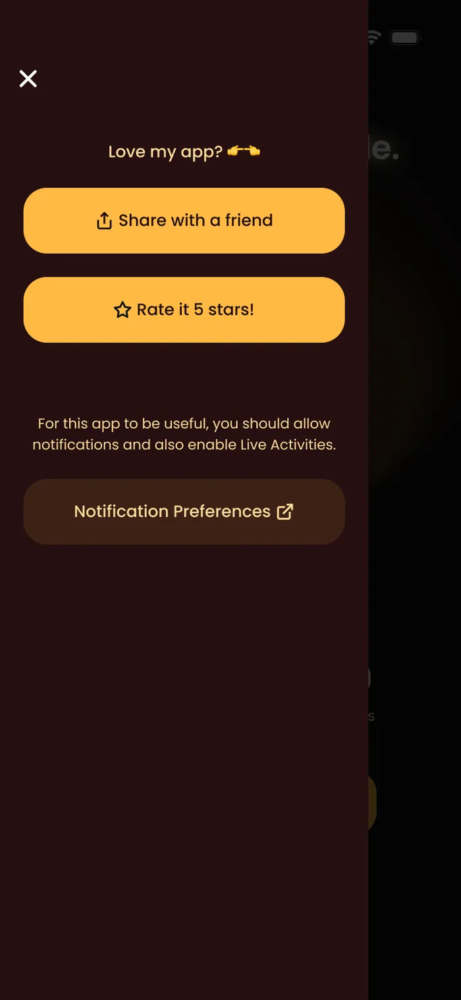
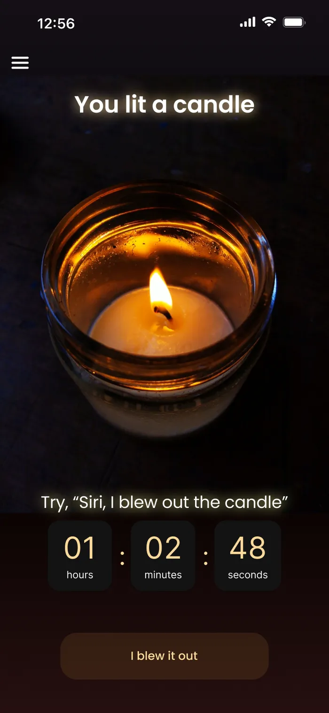
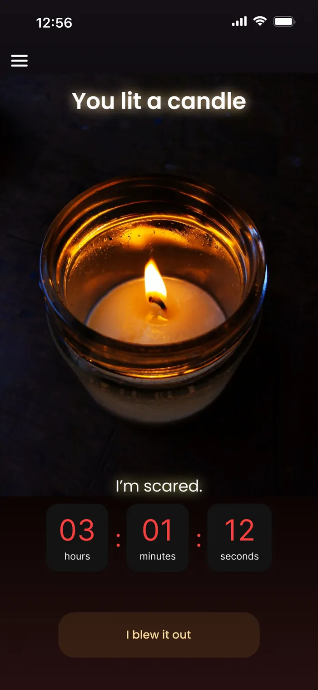
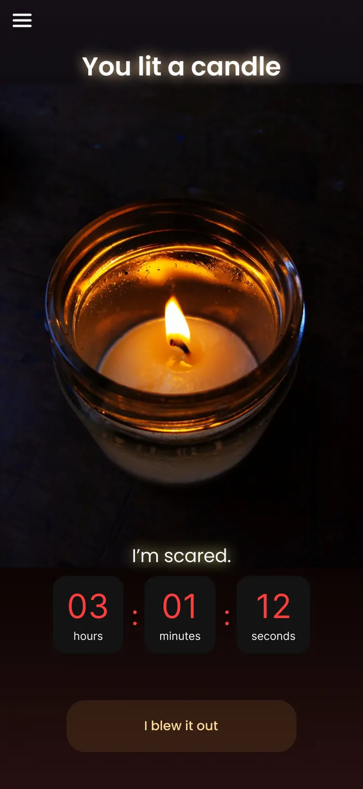
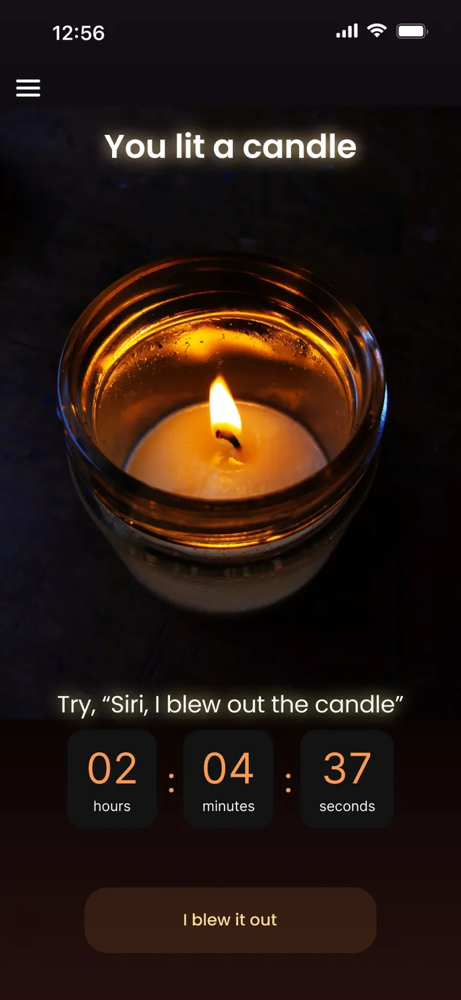
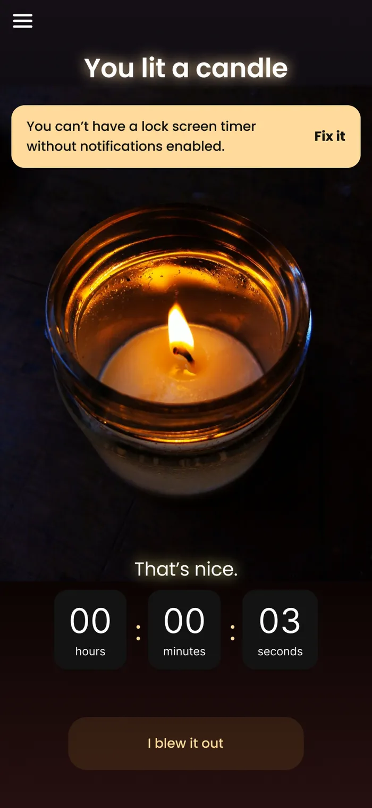
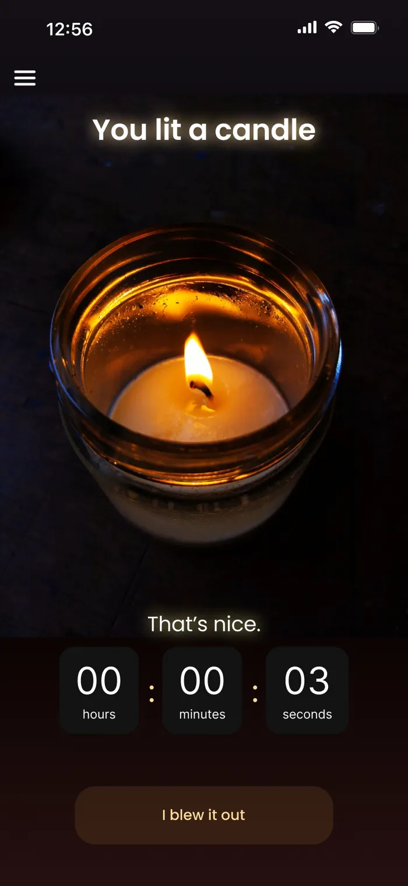
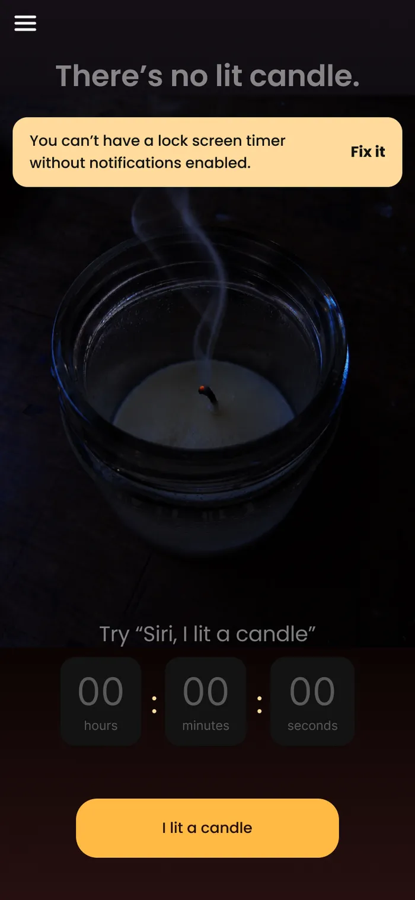
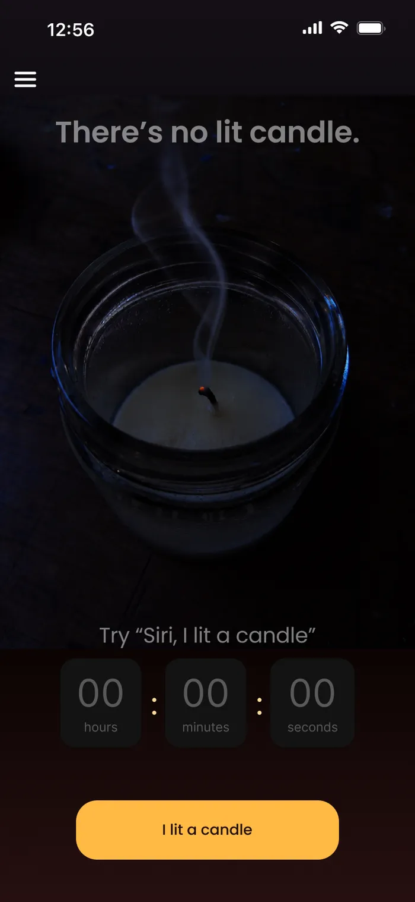
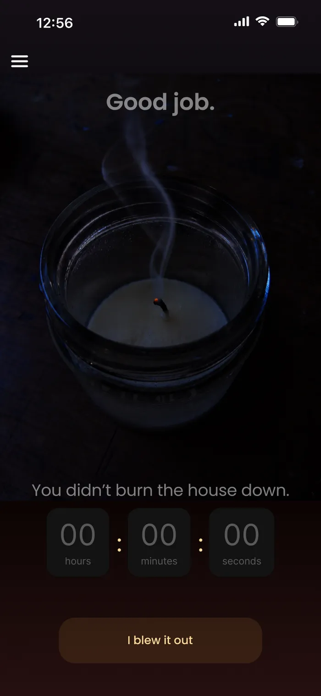
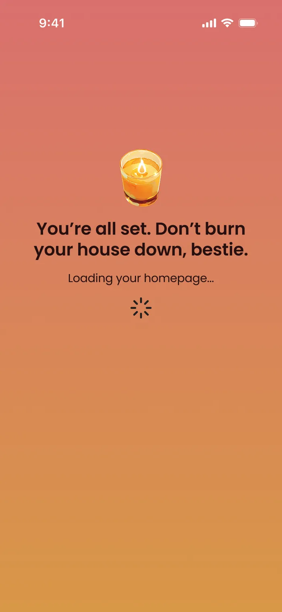
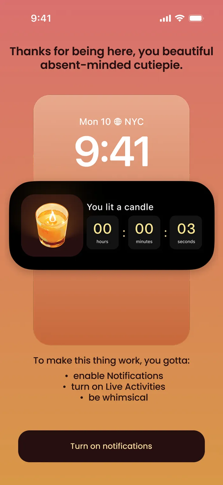
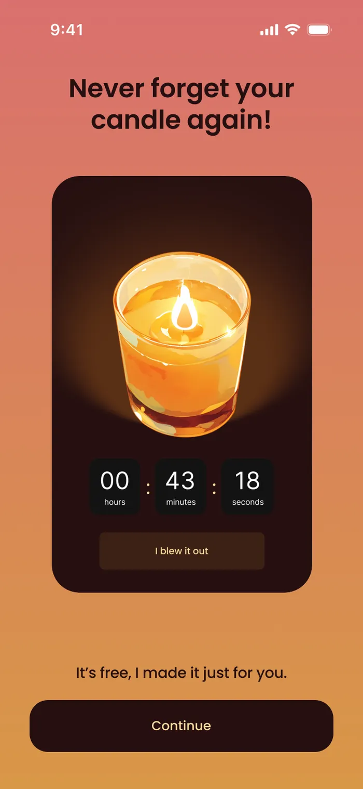
In Context
1 image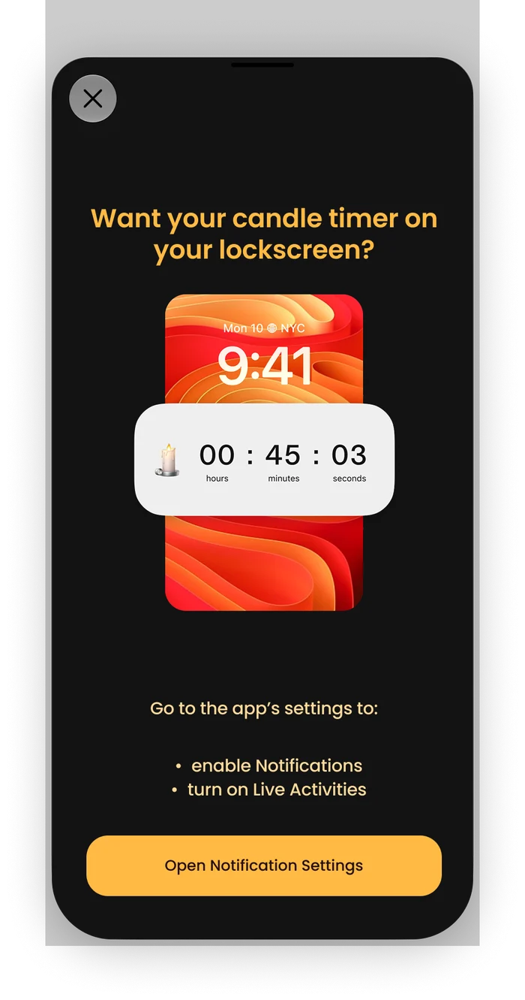